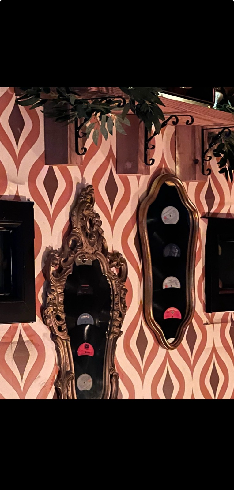
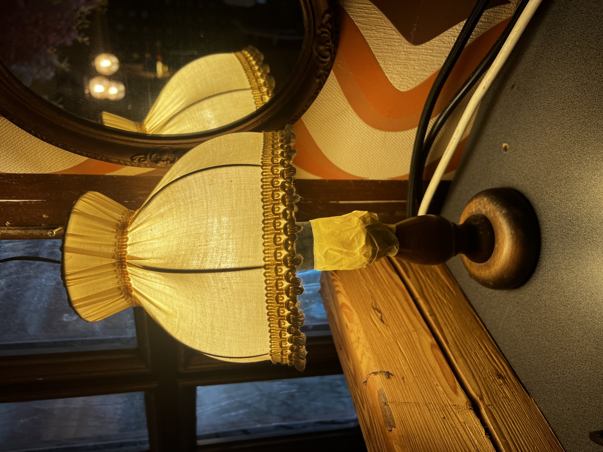

EskiDandy: Eine Yeşilçam-Geschichte
Guten Abend, ihr Freunde mit dem schönen Herzen — meine Damen und Herren, die ihr Teil unserer Geschichte seid.
Ihr seid heute nicht einfach durch eine Tür getreten. Ihr seid in jenen Satz hineingetreten, den wir alle so sehr vermissen: „Ach, was es auch gab — es gab es früher. Alles war von damals …“
Unsere Reise begann 2008 unter dem Namen Dandy. Die Jahre vergingen, der Laden schloss — doch eure tiefe Sehnsucht endete nie. Immer wieder habt ihr uns nach dem Geschmack des „alten Dandy“ gefragt. In diesem Moment verstanden wir: Unser Name war längst gefunden. Wir verbanden unsere Marke mit diesem wehmütigen, warmen Wort des Türkischen — wir wurden EskiDandy.
Denn das Leben ist genau wie dieses Wortspiel: so elegant wie ein edler Dandy und zugleich so voller Sehnsucht wie ein leises „eskidendi“ — früher war’s.
Schaut euch um. Diese alten Fernseher, verstaubten Schreibmaschinen, verstummten Grammophone … Sie mögen nicht mehr funktionieren, aber sie haben hier eine viel wichtigere Aufgabe: Sie sind keine Dekoration — sie sind Zeugen. Stille Wächter jener Yeşilçam-Tage voller Respekt, Würde und großer Liebesgeschichten.


Wir haben diesen Ort nicht nur mit Dingen eingerichtet, sondern mit Ehrfurcht, Haltung und reinem Herzschlag. Für uns ist das hier kein Geschäft — es ist eine Verbeugung, mit der wir die zarte Seele des Yeşilçam-Kinos lebendig halten.
Jetzt schlagen wir ein neues Kapitel auf: Wir gehen über das Dasein eines gewöhnlichen Betriebs hinaus und führen unseren Weg als Verein fort — als KulturKlang e.V. Unsere Tür steht allen offen, die diese Leidenschaft teilen und die Eleganz jener alten Tage kennenlernen und weiterleben lassen wollen. Dieser Ort ist das gemeinsame Zuhause aller, die ihr Herz an dieses kulturelle Erbe verloren haben.
Genießt heute Abend zwischen diesen stillen Zeugen die Musik und die Erinnerungen. Lasst uns mit dem Respekt, den wir füreinander empfinden, die Klasse der alten Tage neu aufleben.
Willkommen bei EskiDandy — willkommen in der Familie des KulturKlang e.V.